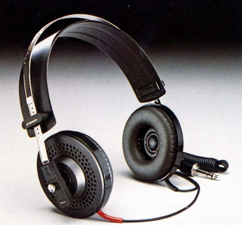
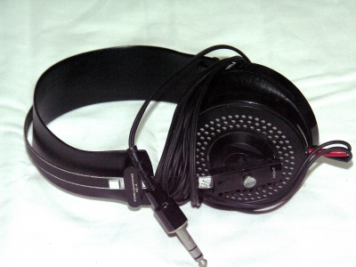

SE-4

■価格 4,700円■型式 オープンエアダイナミック型■振動板 34�oタンジェンシャルエッジ・ドーム型(25ミクロン厚ポリエステル）■インピーダンス 150Ω■再生周波数帯域 20-20,000Hz■許容入力 200mW■感度 96ｄB/mW■コード 3ｍY型ストレートコード■重量 215g（コード含まず）■発売 1976年11月■販売終了 1981年頃■備考

写真は豊永尚輝氏所有機
パイオニアのインデックスへ